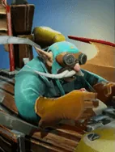
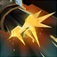

Flak Cannon
Passive Ability
The secondary cannon on the side of the Gyrocopter will continuously attack the furthest enemy piece.
Active ability: Activate immediately
The attack of the main artillery will simultaneously shoot all enemy pieces within the attack range that are not close, and continue to attack for several times.
| ★ | ★★ | ★★★ | |
|---|---|---|---|
| Max attacks | 2 | 4 | 8 |
| Max targets | 3 | 6 | 9 |
| Cooldown (s) | 12 | 10 | 8 |
The newly revamped Gyrocopter has attached enough armaments to assault in a 360 degree radius!
Stats
| ★ | ★★ | ★★★ | |
|---|---|---|---|
| Health | 900 | 1800 | 3600 |
| Mana | 0 | 0 | 0 |
| Armor | 12 | 12 | 12 |
| Magic resistance | 0% | 0% | 0% |
| Attack damage | 65–85 | 130–170 | 260–340 |
| Attack interval (s) | 0.9 | 0.9 | 0.9 |
| Attack range | 400 | 400 | 400 |
| Move speed | 500 | 500 | 500 |
 Dwarf · Take Aim
Dwarf · Take Aim
- (2) Dwarves gain +200 attack range. Their physical damage grows with distance to the target: about +10.6% per square in a straight line (+15% per diagonal square).
 Mech · Heart of the Machine
Mech · Heart of the Machine
Mechs receive +50% healing from all sources.
- (3) Win a round with at least one Mech still alive to get a Heart of the Machine (a free shop refresh).
- (6) The reward has a chance to be a Golden Heart (pick from 5 random Legendary pieces): 20% per courier level above 5 (level 6 = 20%, level 10+ = 100%). Otherwise you get a normal Heart.